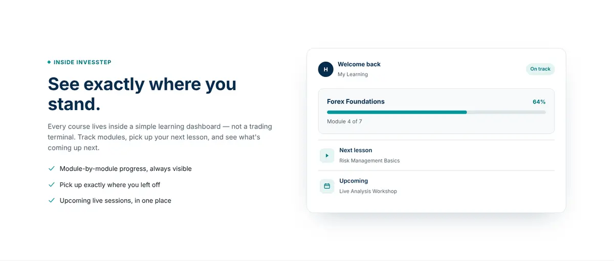

Website / interface design
INVESSTEP: a website
that moves step by step.
- Client
- INVESSTEP — online trading education
- Piece
- Homepage, desktop and mobile
- Languages
- English and Arabic, one toggle
- My role
- Website design


01
Project Overview
INVESSTEP is an online trading-education platform for English- and Arabic-speaking audiences.
02
Design Challenge
Visitors are often beginners who have heard plenty of get-rich-quick promises. So the site has to earn trust through order and clarity, not hype.
03
Design Approach
- The idea is in the name: «step» becomes the page's system — a four-stop path right under the headline, three numbered levels, and «four steps» in the how-it-works section.
- Just two colours: deep navy for headings and the footer, teal for buttons and accents, on light backgrounds that alternate between sections.
- Two languages, one toggle: EN / عربي in the header flips the whole page right-to-left, with Inter for English and Noto Sans Arabic for Arabic.
- Trust instead of promises: a full section titled «Built on methodology, not promises», a «No return claims» card, and «Educational content only — not investment advice» in the footer.
- A preview before sign-up: a learner-dashboard card — progress, next lesson, upcoming session — shows visitors what studying looks like from the inside.
- One card system: levels, courses, sessions and instructors share the same structure: tag, title, description, details and a link at the bottom.
04
Final Deliverables
- Homepage designDesktop and mobile
- Two language versionsEnglish and Arabic, one toggle
05
Project Gallery




Need a bilingual website?
Send the project idea, the audience, the languages and the sections you need.